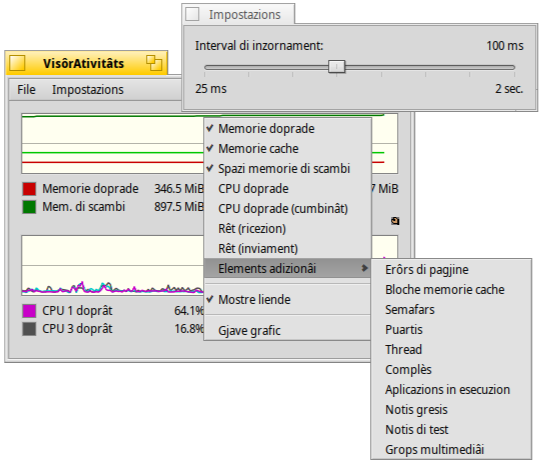

VisôrAtivitâts
VisôrAtivitâts
| Deskbar: | ||
| Posizion: | /boot/system/apps/ActivityMonitor | |
| Impostazions: | ~/config/settings/ActivityMonitor settings |
Tu puedis tignî di voli lis risorsis di sisteme inviant il VisôrAtivitâts e ativant i varis elements che ti interessin.
Fasint clic diestri sul barcon si pues decidi la visualizazion des variis risorsis:
Memorie doprade/Cache, Spazi memorie di scambi, CPU doprade, Rêt Ricezion/Inviament, Erôrs di Pagjine, Semafars, Puartis, Thread, Team, Aplicazions in esecuzion, Dimension notis gresis/test, Grops Multimediâi.
Sot dal grafic e je une liende (che si pues platâ dal menù contestuâl). Tu puedis cambiâ i colôrs e chel dal fonts dal grafic strissinant e molant il colôr di cualsisei seletôr di colôrs, p.e. di Icon-O-Matic.
Tu puedis zontâ plui viodudis dal menù se si jemple masse.
Il menù al vierç un panel par stabilî l'interval di inzornament.
Ogni viodude e à la sô mantie pal Replicant e duncje e pues jessi fissade, par esempli, sul Scritori.